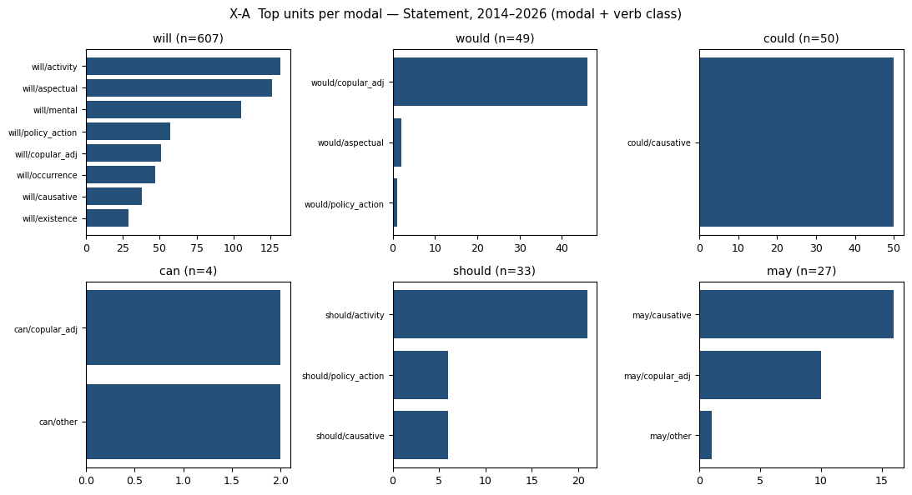
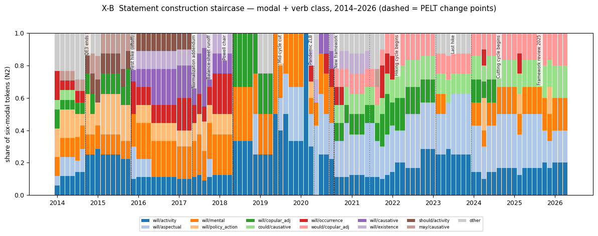
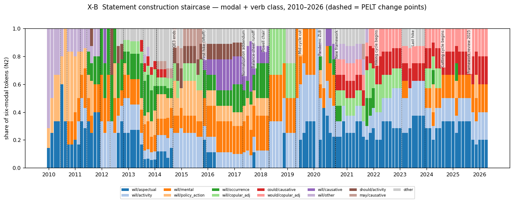
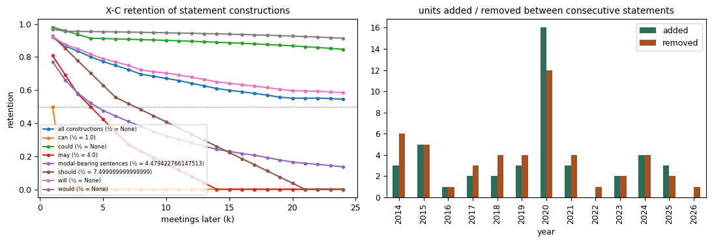
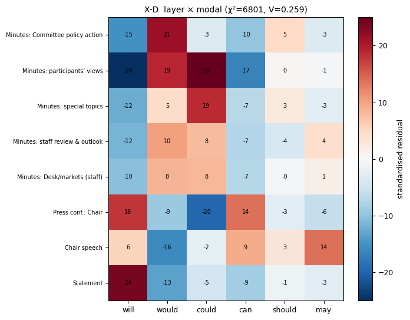
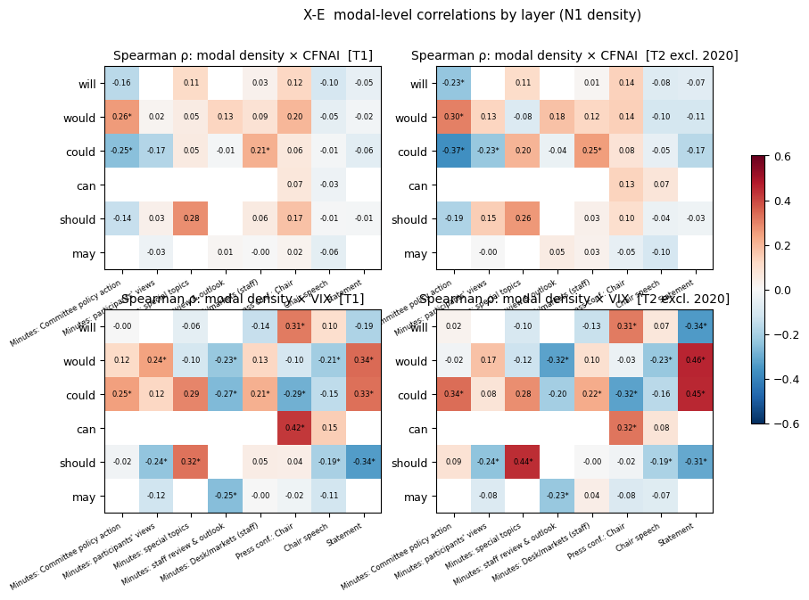
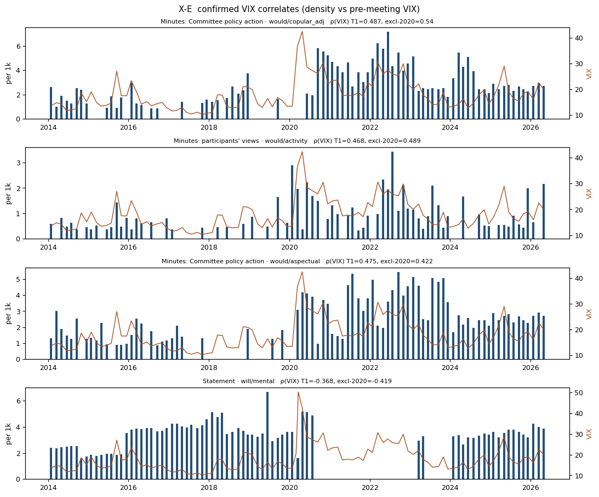
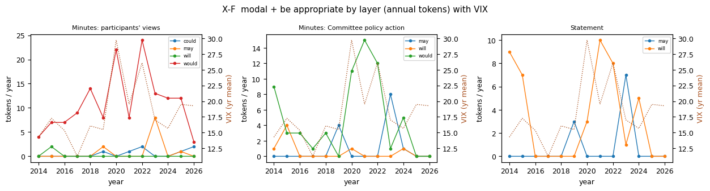

권장안. 기자·진행자 발화 제거, 의사록 규정문·인용문 제거.
권장안. 기자·진행자 발화 제거, 의사록 규정문·인용문 제거.
| 층위 | 문서 | 토큰 | 6대 조동사 | per 1k |
|---|---|---|---|---|
| Statement | 101 | 41,906 | 770 | 18.37 |
| Minutes: Desk/markets (staff) | 99 | 71,942 | 553 | 7.69 |
| Minutes: staff review & outlook | 99 | 249,885 | 539 | 2.16 |
| Minutes: participants' views | 99 | 223,992 | 2,756 | 12.3 |
| Minutes: Committee policy action | 99 | 62,833 | 958 | 15.25 |
| Minutes: special topics | 40 | 40,777 | 783 | 19.2 |
| Press conf.: Chair | 80 | 533,106 | 10,686 | 20.04 |
| Chair speech | 124 | 234,853 | 3,203 | 13.64 |
| 단위 | 변화점 | 전→후 점유율 | 최근접 사건 | 원인 문장 |
|---|---|---|---|---|
| will/activity | 2018-06-13 | 0.12→0.29 | Powell chair (128d) | This assessment will take into account a wide range of information, including measures of labor market conditions, indicators of inflation p |
| will/activity | 2020-03-23 | 0.46→0.15 | Pandemic ZLB (8d) | In light of these uncertainties and muted inflation pressures, the Committee will closely monitor the implications of incoming information f |
| will/aspectual | 2019-07-31 | 0.03→0.26 | Mid-cycle cut (0d) | As the Committee contemplates the future path of the target range for the federal funds rate, it will continue to monitor the implications o |
| will/mental | 2015-12-16 | 0.12→0.22 | First hike (liftoff) (0d) | In determining the timing and size of future adjustments to the target range for the federal funds rate, the Committee will assess realized |
| will/mental | 2020-09-16 | 0.20→0.00 | New framework (20d) | In determining the timing and size of future adjustments to the target range for the federal funds rate, the Committee will assess realized |
| will/mental | 2024-01-31 | 0.03→0.15 | Last hike (189d) | In considering any adjustments to the target range for the federal funds rate, the Committee will carefully assess incoming data, the evolvi |
| will/policy_action | 2018-06-13 | 0.13→0.00 | Powell chair (128d) | The Committee continues to expect that, with gradual adjustments in the stance of monetary policy, economic activity will expand at a modera |
| will/copular_adj | 2015-12-16 | 0.12→0.00 | First hike (liftoff) (0d) | The Committee sees this guidance as consistent with its previous statement that it likely will be appropriate to maintain the 0 to 1/4 perce |
| will/copular_adj | 2018-06-13 | 0.00→0.29 | Powell chair (128d) | The Committee expects that further gradual increases in the target range for the federal funds rate will be consistent with sustained expans |
| will/copular_adj | 2019-06-19 | 0.29→0.00 | Mid-cycle cut (42d) | The Committee expects that further gradual increases in the target range for the federal funds rate will be consistent with sustained expans |
| will/copular_adj | 2020-09-16 | 0.00→0.12 | New framework (20d) | The Committee decided to keep the target range for the federal funds rate at 0 to 1/4 percent and expects it will be appropriate to maintain |
| will/copular_adj | 2023-03-22 | 0.17→0.02 | Last hike (126d) | In support of these goals, the Committee decided to raise the target range for the federal funds rate to 1/4 to 1/2 percent and anticipates |
| could/causative | 2020-09-16 | 0.00→0.12 | New framework (20d) | The Committee would be prepared to adjust the stance of monetary policy as appropriate if risks emerge that could impede the attainment of t |
| will/occurrence | 2015-12-16 | 0.00→0.12 | First hike (liftoff) (0d) | The Committee judges that there has been considerable improvement in labor market conditions this year, and it is reasonably confident that |
| will/occurrence | 2018-06-13 | 0.18→0.00 | Powell chair (128d) | The Committee expects that economic conditions will evolve in a manner that will warrant gradual increases in the federal funds rate; the fe |
| would/copular_adj | 2020-09-16 | 0.00→0.12 | New framework (20d) | The Committee would be prepared to adjust the stance of monetary policy as appropriate if risks emerge that could impede the attainment of t |
| will/causative | 2015-12-16 | 0.00→0.17 | First hike (liftoff) (0d) | The Committee expects that economic conditions will evolve in a manner that will warrant only gradual increases in the federal funds rate; t |
| will/causative | 2018-06-13 | 0.20→0.00 | Powell chair (128d) | The Committee continues to expect that, with gradual adjustments in the stance of monetary policy, economic activity will expand at a modera |
| will/existence | 2015-12-16 | 0.00→0.11 | First hike (liftoff) (0d) | However, the actual path of the federal funds rate will depend on the economic outlook as informed by incoming data. |
| will/existence | 2018-06-13 | 0.12→0.00 | Powell chair (128d) | However, the actual path of the federal funds rate will depend on the economic outlook as informed by incoming data. |
| will/existence | 2020-07-29 | 0.02→0.12 | New framework (29d) | The path of the economy will depend significantly on the course of the virus. |
| will/existence | 2021-07-28 | 0.12→0.00 | Hiking cycle begins (231d) | The path of the economy will depend significantly on the course of the virus. |
| should/activity | 2014-10-29 | 0.00→0.12 | QE3 ends (0d) | This policy, by keeping the Committee's holdings of longer-term securities at sizable levels, should help maintain accommodative financial c |
| should/activity | 2017-06-14 | 0.11→0.00 | Normalization addendum (0d) | This policy, by keeping the Committee's holdings of longer-term securities at sizable levels, should help maintain accommodative financial c |
| may/causative | 2014-10-29 | 0.05→0.14 | QE3 ends (0d) | The Committee currently anticipates that, even after employment and inflation are near mandate-consistent levels, economic conditions may, f |
| may/causative | 2015-12-16 | 0.14→0.00 | First hike (liftoff) (0d) | The Committee currently anticipates that, even after employment and inflation are near mandate-consistent levels, economic conditions may, f |
| 층위 | 단위 | 거시 | ρ T1 | ρ excl-2020 | ρ 2010– | ρ 2014–19 | ρ 2021–26 | 토큰 |
|---|---|---|---|---|---|---|---|---|
| min_committee | would/copular_adj | vix | 0.487 | 0.54 | 0.422 | 0.123 | 0.4 | 126 |
| min_participants | would/activity | vix | 0.468 | 0.489 | 0.278 | 0.312 | 0.397 | 158 |
| min_committee | would/aspectual | vix | 0.475 | 0.422 | 0.271 | 0.027 | 0.098 | 116 |
| statement | will/mental | vix | -0.368 | -0.419 | -0.409 | -0.353 | -0.257 | 105 |
| min_committee | would/existence | cfnai | 0.425 | 0.401 | 0.38 | 0.6 | 0.336 | 52 |
| min_committee | would/mental | cfnai | -0.479 | -0.398 | -0.407 | -0.285 | -0.42 | 71 |
| min_staff | would/policy_action | vix | -0.351 | -0.394 | -0.352 | -0.155 | -0.095 | 58 |
| min_committee | could | cfnai | -0.251 | -0.37 | -0.13 | -0.415 | -0.548 | 83 |
| min_staff | ALL | vix | -0.333 | -0.361 | -0.393 | -0.197 | -0.235 | 539 |
| min_participants | would/existence | cfnai | 0.344 | 0.342 | 0.268 | 0.376 | 0.352 | 93 |
| statement | will/copular_adj | cfnai | 0.393 | 0.338 | 0.353 | 0.19 | 0.386 | 51 |
| min_staff | would | vix | -0.229 | -0.32 | -0.269 | -0.262 | -0.014 | 327 |
| 층위 | 단위 | 토큰 | ρ VIX T1 | ρ VIX excl-2020 | ρ CFNAI T1 | 제로 비율 T1 |
|---|---|---|---|---|---|---|
| min_committee | may+be+appropriate | 13 | -0.092 (p=0.3658) | -0.058 (p=0.5824) | -0.222 | 0.89 |
| min_committee | will+be+appropriate | 7 | -0.102 (p=0.3139) | -0.155 (p=0.1425) | -0.012 | 0.93 |
| min_committee | would+be+appropriate | 63 | 0.373 (p=0.0001) | 0.334 (p=0.0012) | 0.407 | 0.55 |
| min_participants | may+be+appropriate | 11 | 0.022 (p=0.8306) | 0.055 (p=0.6052) | -0.154 | 0.94 |
| min_participants | would+be+appropriate | 143 | 0.21 (p=0.037) | 0.154 (p=0.1443) | -0.053 | 0.23 |
| min_special | would+be+appropriate | 23 | 0.217 (p=0.1787) | 0.325 (p=0.0531) | 0.289 | 0.6 |
| min_staff_desk | would+be+appropriate | 8 | 0.054 (p=0.5978) | 0.089 (p=0.4028) | -0.015 | 0.95 |
| pc_chair | may+be+appropriate | 21 | -0.09 (p=0.4249) | -0.044 (p=0.7154) | -0.122 | 0.89 |
| pc_chair | will+be+appropriate | 105 | -0.053 (p=0.6378) | 0.01 (p=0.932) | 0.203 | 0.42 |
| pc_chair | would+be+appropriate | 38 | -0.135 (p=0.2322) | -0.072 (p=0.5491) | -0.016 | 0.69 |
| speech_chair | will+be+appropriate | 21 | -0.033 (p=0.7157) | -0.046 (p=0.6179) | 0.047 | 0.86 |
| speech_chair | would+be+appropriate | 11 | -0.043 (p=0.6368) | -0.025 (p=0.7871) | -0.01 | 0.94 |
| statement | may+be+appropriate | 10 | -0.077 (p=0.4419) | -0.037 (p=0.7308) | -0.216 | 0.9 |
| statement | will+be+appropriate | 43 | 0.235 (p=0.018) | 0.287 (p=0.0058) | 0.364 | 0.61 |








| period | layer | label | n_docs | tokens | six_modal_tokens | per_1k |
|---|---|---|---|---|---|---|
| T1 | statement | Statement | 101 | 41906 | 770 | 18.37 |
| T1 | min_staff_desk | Minutes: Desk/markets (staff) | 99 | 71942 | 553 | 7.69 |
| T1 | min_staff | Minutes: staff review & outlook | 99 | 249885 | 539 | 2.16 |
| T1 | min_participants | Minutes: participants' views | 99 | 223992 | 2756 | 12.30 |
| T1 | min_committee | Minutes: Committee policy action | 99 | 62833 | 958 | 15.25 |
| T1 | min_special | Minutes: special topics | 40 | 40777 | 783 | 19.20 |
| T1 | pc_chair | Press conf.: Chair | 80 | 533106 | 10686 | 20.04 |
| T1 | speech_chair | Chair speech | 124 | 234853 | 3203 | 13.64 |
| T2 | statement | Statement | 91 | 37819 | 697 | 18.43 |
| T2 | min_staff_desk | Minutes: Desk/markets (staff) | 91 | 65804 | 501 | 7.61 |
| T2 | min_staff | Minutes: staff review & outlook | 91 | 225146 | 498 | 2.21 |
| T2 | min_participants | Minutes: participants' views | 91 | 204165 | 2444 | 11.97 |
| T2 | min_committee | Minutes: Committee policy action | 91 | 58151 | 886 | 15.24 |
| T2 | min_special | Minutes: special topics | 36 | 35950 | 675 | 18.78 |
| T2 | pc_chair | Press conf.: Chair | 71 | 471303 | 9293 | 19.72 |
| T2 | speech_chair | Chair speech | 118 | 226298 | 3075 | 13.59 |
| T3 | statement | Statement | 133 | 57065 | 1007 | 17.65 |
| T3 | min_staff_desk | Minutes: Desk/markets (staff) | 131 | 88213 | 774 | 8.77 |
| T3 | min_staff | Minutes: staff review & outlook | 131 | 334850 | 704 | 2.10 |
| T3 | min_participants | Minutes: participants' views | 131 | 282404 | 3359 | 11.89 |
| T3 | min_committee | Minutes: Committee policy action | 131 | 84104 | 1254 | 14.91 |
| T3 | min_special | Minutes: special topics | 49 | 45089 | 863 | 19.14 |
| T3 | pc_chair | Press conf.: Chair | 92 | 617268 | 12233 | 19.82 |
| T3 | speech_chair | Chair speech | 174 | 365802 | 4720 | 12.90 |
| unit | break_date | share_before | share_after | direction | nearest_event | days_to_event | sentence_after | sentence_before |
|---|---|---|---|---|---|---|---|---|
| will/activity | 2018-06-13 | 0.117 | 0.292 | up | Powell chair | 128 | This assessment will take into account a wide range of information, including measures of labor market conditions, indicators of inflation pressures and inflation expectations, and readings on financial and international | |
| will/activity | 2020-03-23 | 0.462 | 0.148 | down | Pandemic ZLB | 8 | In light of these uncertainties and muted inflation pressures, the Committee will closely monitor the implications of incoming information for the economic outlook and will act as appropriate to sustain the expansion, wi | |
| will/aspectual | 2019-07-31 | 0.031 | 0.260 | up | Mid-cycle cut | 0 | As the Committee contemplates the future path of the target range for the federal funds rate, it will continue to monitor the implications of incoming information for the economic outlook and will act as appropriate to s | |
| will/mental | 2015-12-16 | 0.124 | 0.219 | up | First hike (liftoff) | 0 | In determining the timing and size of future adjustments to the target range for the federal funds rate, the Committee will assess realized and expected economic conditions relative to its objectives of maximum employmen | |
| will/mental | 2020-09-16 | 0.204 | 0.000 | down | New framework | 20 | In determining the timing and size of future adjustments to the target range for the federal funds rate, the Committee will assess realized and expected economic conditions relative to its maximum employment objective an | |
| will/mental | 2024-01-31 | 0.031 | 0.146 | up | Last hike | 189 | In considering any adjustments to the target range for the federal funds rate, the Committee will carefully assess incoming data, the evolving outlook, and the balance of risks. | |
| will/policy_action | 2018-06-13 | 0.129 | 0.000 | down | Powell chair | 128 | The Committee continues to expect that, with gradual adjustments in the stance of monetary policy, economic activity will expand at a moderate pace, and labor market conditions will strengthen somewhat further. | |
| will/copular_adj | 2015-12-16 | 0.120 | 0.000 | down | First hike (liftoff) | 0 | The Committee sees this guidance as consistent with its previous statement that it likely will be appropriate to maintain the 0 to 1/4 percent target range for the federal funds rate for a considerable time following the | |
| will/copular_adj | 2018-06-13 | 0.000 | 0.292 | up | Powell chair | 128 | The Committee expects that further gradual increases in the target range for the federal funds rate will be consistent with sustained expansion of economic activity, strong labor market conditions, and inflation near the | |
| will/copular_adj | 2019-06-19 | 0.292 | 0.000 | down | Mid-cycle cut | 42 | The Committee expects that further gradual increases in the target range for the federal funds rate will be consistent with sustained expansion of economic activity, strong labor market conditions, and inflation near the | |
| will/copular_adj | 2020-09-16 | 0.000 | 0.116 | up | New framework | 20 | The Committee decided to keep the target range for the federal funds rate at 0 to 1/4 percent and expects it will be appropriate to maintain this target range until labor market conditions have reached levels consistent | |
| will/copular_adj | 2023-03-22 | 0.166 | 0.018 | down | Last hike | 126 | In support of these goals, the Committee decided to raise the target range for the federal funds rate to 1/4 to 1/2 percent and anticipates that ongoing increases in the target range will be appropriate. | |
| could/causative | 2020-09-16 | 0.000 | 0.116 | up | New framework | 20 | The Committee would be prepared to adjust the stance of monetary policy as appropriate if risks emerge that could impede the attainment of the Committee's goals. | |
| will/occurrence | 2015-12-16 | 0.000 | 0.122 | up | First hike (liftoff) | 0 | The Committee judges that there has been considerable improvement in labor market conditions this year, and it is reasonably confident that inflation will rise, over the medium term, to its 2 percent objective. | |
| will/occurrence | 2018-06-13 | 0.180 | 0.000 | down | Powell chair | 128 | The Committee expects that economic conditions will evolve in a manner that will warrant gradual increases in the federal funds rate; the federal funds rate is likely to remain, for some time, below levels that are expec | |
| would/copular_adj | 2020-09-16 | 0.000 | 0.116 | up | New framework | 20 | The Committee would be prepared to adjust the stance of monetary policy as appropriate if risks emerge that could impede the attainment of the Committee's goals. | |
| will/causative | 2015-12-16 | 0.000 | 0.165 | up | First hike (liftoff) | 0 | The Committee expects that economic conditions will evolve in a manner that will warrant only gradual increases in the federal funds rate; the federal funds rate is likely to remain, for some time, below levels that are | |
| will/causative | 2018-06-13 | 0.195 | 0.000 | down | Powell chair | 128 | The Committee continues to expect that, with gradual adjustments in the stance of monetary policy, economic activity will expand at a moderate pace, and labor market conditions will strengthen somewhat further. | |
| will/existence | 2015-12-16 | 0.000 | 0.110 | up | First hike (liftoff) | 0 | However, the actual path of the federal funds rate will depend on the economic outlook as informed by incoming data. | |
| will/existence | 2018-06-13 | 0.117 | 0.000 | down | Powell chair | 128 | However, the actual path of the federal funds rate will depend on the economic outlook as informed by incoming data. | |
| will/existence | 2020-07-29 | 0.018 | 0.116 | up | New framework | 29 | The path of the economy will depend significantly on the course of the virus. | |
| will/existence | 2021-07-28 | 0.116 | 0.000 | down | Hiking cycle begins | 231 | The path of the economy will depend significantly on the course of the virus. | |
| should/activity | 2014-10-29 | 0.000 | 0.125 | up | QE3 ends | 0 | This policy, by keeping the Committee's holdings of longer-term securities at sizable levels, should help maintain accommodative financial conditions. | |
| should/activity | 2017-06-14 | 0.107 | 0.000 | down | Normalization addendum | 0 | This policy, by keeping the Committee's holdings of longer-term securities at sizable levels, should help maintain accommodative financial conditions. | |
| may/causative | 2014-10-29 | 0.053 | 0.139 | up | QE3 ends | 0 | The Committee currently anticipates that, even after employment and inflation are near mandate-consistent levels, economic conditions may, for some time, warrant keeping the target federal funds rate below levels the Com | |
| may/causative | 2015-12-16 | 0.138 | 0.000 | down | First hike (liftoff) | 0 | The Committee currently anticipates that, even after employment and inflation are near mandate-consistent levels, economic conditions may, for some time, warrant keeping the target federal funds rate below levels the Com |
| layer | will_n | would_n | could_n | can_n | should_n | may_n | will_per1k | would_per1k | could_per1k | can_per1k | should_per1k | may_per1k | tokens |
|---|---|---|---|---|---|---|---|---|---|---|---|---|---|
| min_committee | 37 | 719 | 83 | 3 | 85 | 31 | 0.59 | 11.44 | 1.32 | 0.05 | 1.35 | 0.49 | 62833 |
| min_participants | 30 | 1537 | 875 | 8 | 149 | 157 | 0.13 | 6.86 | 3.91 | 0.04 | 0.67 | 0.70 | 223992 |
| min_special | 49 | 344 | 283 | 21 | 58 | 28 | 1.20 | 8.44 | 6.94 | 0.51 | 1.42 | 0.69 | 40777 |
| min_staff | 16 | 327 | 132 | 2 | 5 | 57 | 0.06 | 1.31 | 0.53 | 0.01 | 0.02 | 0.23 | 249885 |
| min_staff_desk | 35 | 307 | 138 | 5 | 27 | 41 | 0.49 | 4.27 | 1.92 | 0.07 | 0.38 | 0.57 | 71942 |
| pc_chair | 4341 | 3127 | 626 | 1610 | 497 | 485 | 8.14 | 5.87 | 1.17 | 3.02 | 0.93 | 0.91 | 533106 |
| speech_chair | 1169 | 573 | 355 | 514 | 210 | 382 | 4.98 | 2.44 | 1.51 | 2.19 | 0.89 | 1.63 | 234853 |
| statement | 607 | 49 | 50 | 4 | 33 | 27 | 14.48 | 1.17 | 1.19 | 0.10 | 0.79 | 0.64 | 41906 |
| layer | modal | n | neg | question | cond | reported | contracted | subj_we_I | subj_person | subj_committee_fed | subj_econ | passive | perfect |
|---|---|---|---|---|---|---|---|---|---|---|---|---|---|
| min_committee | could | 83 | 0.000 | 0.000 | 0.614 | 0.277 | 0.000 | 0.000 | 0.000 | 0.036 | 0.120 | 0.060 | 0.000 |
| min_committee | will | 37 | 0.000 | 0.000 | 0.216 | 0.622 | 0.000 | 0.000 | 0.108 | 0.162 | 0.297 | 0.000 | 0.000 |
| min_committee | would | 719 | 0.000 | 0.000 | 0.164 | 0.786 | 0.000 | 0.000 | 0.243 | 0.103 | 0.275 | 0.017 | 0.001 |
| min_participants | could | 875 | 0.005 | 0.000 | 0.287 | 0.506 | 0.000 | 0.000 | 0.029 | 0.027 | 0.304 | 0.098 | 0.016 |
| min_participants | will | 30 | 0.000 | 0.000 | 0.267 | 0.767 | 0.000 | 0.000 | 0.100 | 0.000 | 0.467 | 0.167 | 0.000 |
| min_participants | would | 1537 | 0.016 | 0.000 | 0.184 | 0.714 | 0.000 | 0.000 | 0.040 | 0.020 | 0.399 | 0.116 | 0.005 |
| min_special | can | 21 | 0.048 | 0.000 | 0.429 | 0.571 | 0.000 | 0.000 | 0.000 | 0.000 | 0.381 | 0.333 | 0.000 |
| min_special | could | 283 | 0.004 | 0.000 | 0.300 | 0.431 | 0.000 | 0.000 | 0.011 | 0.085 | 0.279 | 0.201 | 0.004 |
| min_special | will | 49 | 0.000 | 0.000 | 0.082 | 0.347 | 0.000 | 0.000 | 0.020 | 0.224 | 0.143 | 0.102 | 0.000 |
| min_special | would | 344 | 0.052 | 0.000 | 0.241 | 0.576 | 0.000 | 0.000 | 0.067 | 0.067 | 0.186 | 0.145 | 0.006 |
| min_staff | could | 132 | 0.000 | 0.000 | 0.326 | 0.250 | 0.000 | 0.000 | 0.000 | 0.000 | 0.530 | 0.038 | 0.008 |
| min_staff | would | 327 | 0.006 | 0.000 | 0.104 | 0.327 | 0.000 | 0.000 | 0.003 | 0.021 | 0.520 | 0.058 | 0.009 |
| min_staff_desk | could | 138 | 0.000 | 0.000 | 0.246 | 0.464 | 0.000 | 0.000 | 0.029 | 0.058 | 0.283 | 0.188 | 0.014 |
| min_staff_desk | will | 35 | 0.029 | 0.000 | 0.257 | 0.457 | 0.000 | 0.000 | 0.057 | 0.143 | 0.143 | 0.086 | 0.029 |
| min_staff_desk | would | 307 | 0.020 | 0.000 | 0.215 | 0.459 | 0.000 | 0.000 | 0.072 | 0.101 | 0.179 | 0.143 | 0.016 |
| pc_chair | can | 1610 | 0.170 | 0.022 | 0.195 | 0.153 | 0.000 | 0.399 | 0.251 | 0.012 | 0.057 | 0.030 | 0.001 |
| pc_chair | could | 626 | 0.037 | 0.024 | 0.291 | 0.142 | 0.000 | 0.158 | 0.133 | 0.006 | 0.097 | 0.061 | 0.027 |
| pc_chair | will | 4341 | 0.044 | 0.024 | 0.158 | 0.196 | 0.281 | 0.418 | 0.078 | 0.021 | 0.137 | 0.025 | 0.006 |
| pc_chair | would | 3127 | 0.103 | 0.025 | 0.230 | 0.169 | 0.095 | 0.560 | 0.071 | 0.006 | 0.045 | 0.017 | 0.020 |
| speech_chair | can | 514 | 0.123 | 0.045 | 0.212 | 0.066 | 0.000 | 0.212 | 0.093 | 0.037 | 0.175 | 0.117 | 0.000 |
| speech_chair | could | 355 | 0.017 | 0.014 | 0.282 | 0.115 | 0.000 | 0.079 | 0.085 | 0.020 | 0.270 | 0.073 | 0.039 |
| speech_chair | will | 1169 | 0.034 | 0.015 | 0.157 | 0.132 | 0.008 | 0.334 | 0.055 | 0.032 | 0.177 | 0.049 | 0.003 |
| speech_chair | would | 573 | 0.047 | 0.010 | 0.288 | 0.157 | 0.009 | 0.178 | 0.054 | 0.042 | 0.215 | 0.065 | 0.082 |
| statement | could | 50 | 0.000 | 0.000 | 0.920 | 0.080 | 0.000 | 0.000 | 0.000 | 0.000 | 0.080 | 0.000 | 0.000 |
| statement | will | 607 | 0.000 | 0.000 | 0.041 | 0.234 | 0.000 | 0.000 | 0.000 | 0.463 | 0.227 | 0.002 | 0.000 |
| statement | would | 49 | 0.000 | 0.000 | 0.939 | 0.041 | 0.000 | 0.000 | 0.000 | 0.939 | 0.000 | 0.000 | 0.000 |
| level | key | period | macro | n | r | p_r | rho | p_rho | q_rho |
|---|---|---|---|---|---|---|---|---|---|
| genre | minutes | T1 | cfnai | 99 | -0.039 | 0.702 | 0.079 | 0.438 | 0.899 |
| genre | minutes | T1 | vix | 99 | 0.101 | 0.319 | 0.066 | 0.513 | 0.607 |
| genre | minutes | T2 | cfnai | 91 | 0.124 | 0.242 | 0.153 | 0.147 | 0.626 |
| genre | minutes | T2 | vix | 91 | -0.032 | 0.762 | -0.008 | 0.941 | 0.941 |
| genre | minutes | T3 | cfnai | 131 | -0.028 | 0.751 | 0.085 | 0.334 | 0.819 |
| genre | minutes | T3 | vix | 131 | -0.019 | 0.827 | -0.065 | 0.462 | 0.545 |
| genre | minutes | H1 | cfnai | 48 | 0.183 | 0.213 | 0.218 | 0.137 | 0.515 |
| genre | minutes | H1 | vix | 48 | 0.171 | 0.245 | 0.215 | 0.142 | 0.418 |
| genre | minutes | H2 | cfnai | 43 | 0.107 | 0.493 | 0.046 | 0.768 | 0.825 |
| genre | minutes | H2 | vix | 43 | -0.038 | 0.807 | -0.022 | 0.888 | 0.967 |
| genre | press_conf | T1 | cfnai | 80 | 0.110 | 0.329 | 0.216 | 0.054 | 0.651 |
| genre | press_conf | T1 | vix | 80 | 0.362 | 0.001 | 0.319 | 0.004 | 0.021 |
| genre | press_conf | T2 | cfnai | 71 | 0.295 | 0.013 | 0.258 | 0.030 | 0.392 |
| genre | press_conf | T2 | vix | 71 | 0.278 | 0.019 | 0.297 | 0.012 | 0.038 |
| genre | press_conf | T3 | cfnai | 92 | 0.097 | 0.359 | 0.142 | 0.176 | 0.819 |
| genre | press_conf | T3 | vix | 92 | 0.339 | 0.001 | 0.292 | 0.005 | 0.017 |
| genre | press_conf | H2 | cfnai | 43 | 0.342 | 0.025 | 0.317 | 0.038 | 0.241 |
| genre | press_conf | H2 | vix | 43 | 0.237 | 0.126 | 0.252 | 0.103 | 0.285 |
| genre | speech | T1 | cfnai | 124 | -0.088 | 0.329 | -0.096 | 0.291 | 0.899 |
| genre | speech | T1 | vix | 124 | 0.094 | 0.300 | -0.017 | 0.851 | 0.851 |
| genre | speech | T2 | cfnai | 118 | -0.093 | 0.316 | -0.074 | 0.425 | 0.626 |
| genre | speech | T2 | vix | 118 | -0.062 | 0.507 | -0.074 | 0.424 | 0.596 |
| genre | speech | T3 | cfnai | 174 | -0.096 | 0.208 | -0.131 | 0.084 | 0.819 |
| genre | speech | T3 | vix | 174 | 0.076 | 0.319 | -0.008 | 0.921 | 0.921 |
| genre | speech | H1 | cfnai | 73 | -0.117 | 0.326 | -0.156 | 0.187 | 0.515 |
| genre | speech | H1 | vix | 73 | -0.076 | 0.523 | -0.103 | 0.384 | 0.663 |
| genre | speech | H2 | cfnai | 45 | -0.073 | 0.634 | -0.040 | 0.792 | 0.825 |
| genre | speech | H2 | vix | 45 | -0.033 | 0.831 | 0.031 | 0.840 | 0.967 |
| genre | statement | T1 | cfnai | 101 | -0.057 | 0.569 | -0.124 | 0.216 | 0.899 |
| genre | statement | T1 | vix | 101 | 0.009 | 0.932 | 0.061 | 0.542 | 0.613 |
| genre | statement | T2 | cfnai | 91 | -0.136 | 0.200 | -0.178 | 0.091 | 0.626 |
| genre | statement | T2 | vix | 91 | 0.070 | 0.510 | 0.045 | 0.673 | 0.795 |
| genre | statement | T3 | cfnai | 133 | -0.056 | 0.526 | -0.096 | 0.270 | 0.819 |
| genre | statement | T3 | vix | 133 | -0.117 | 0.178 | -0.116 | 0.185 | 0.344 |
| genre | statement | H1 | cfnai | 48 | 0.157 | 0.285 | 0.175 | 0.235 | 0.515 |
| genre | statement | H1 | vix | 48 | -0.282 | 0.053 | -0.405 | 0.004 | 0.041 |
| genre | statement | H2 | cfnai | 43 | -0.505 | 0.000 | -0.518 | 0.000 | 0.009 |
| genre | statement | H2 | vix | 43 | -0.421 | 0.005 | -0.472 | 0.001 | 0.017 |
| layer | min_committee | T1 | cfnai | 99 | -0.047 | 0.642 | 0.009 | 0.926 | 0.953 |
| layer | min_committee | T1 | vix | 99 | 0.102 | 0.318 | 0.122 | 0.230 | 0.345 |
| layer | min_committee | T2 | cfnai | 91 | -0.012 | 0.909 | -0.019 | 0.856 | 0.918 |
| layer | min_committee | T2 | vix | 91 | 0.070 | 0.510 | 0.098 | 0.354 | 0.605 |
| layer | min_committee | T3 | cfnai | 131 | -0.018 | 0.839 | 0.101 | 0.249 | 0.685 |
| layer | min_committee | T3 | vix | 131 | 0.082 | 0.354 | 0.097 | 0.270 | 0.409 |
| layer | min_committee | H1 | cfnai | 48 | 0.120 | 0.416 | 0.179 | 0.222 | 0.434 |
| layer | min_committee | H1 | vix | 48 | -0.124 | 0.401 | -0.114 | 0.441 | 0.835 |
| layer | min_committee | H2 | cfnai | 43 | -0.200 | 0.197 | -0.223 | 0.151 | 0.390 |
| layer | min_committee | H2 | vix | 43 | -0.223 | 0.151 | -0.180 | 0.248 | 0.555 |
| layer | min_participants | T1 | cfnai | 99 | -0.132 | 0.193 | -0.090 | 0.373 | 0.887 |
| layer | min_participants | T1 | vix | 99 | 0.263 | 0.009 | 0.144 | 0.156 | 0.299 |
| layer | min_participants | T2 | cfnai | 91 | 0.034 | 0.750 | -0.005 | 0.960 | 0.979 |
| layer | min_participants | T2 | vix | 91 | 0.050 | 0.641 | 0.064 | 0.549 | 0.670 |
| layer | min_participants | T3 | cfnai | 131 | -0.115 | 0.190 | -0.069 | 0.433 | 0.824 |
| layer | min_participants | T3 | vix | 131 | 0.083 | 0.344 | 0.025 | 0.777 | 0.877 |
| layer | min_participants | H1 | cfnai | 48 | 0.064 | 0.665 | 0.098 | 0.507 | 0.601 |
| layer | min_participants | H1 | vix | 48 | -0.027 | 0.855 | -0.009 | 0.954 | 0.954 |
| layer | min_participants | H2 | cfnai | 43 | 0.001 | 0.996 | -0.074 | 0.639 | 0.836 |
| layer | min_participants | H2 | vix | 43 | -0.059 | 0.708 | -0.045 | 0.773 | 0.918 |
| layer | min_special | T1 | cfnai | 40 | 0.097 | 0.551 | 0.196 | 0.225 | 0.706 |
| layer | min_special | T1 | vix | 40 | -0.095 | 0.561 | -0.161 | 0.320 | 0.427 |
| level | key | unit | macro | rho_T1 | p_T1 | rho_T2 | p_T2 | rho_T3 | rho_H1 | rho_H2 | n_tokens_T1 | zero_share_T1 | T1_only | era_composition | confirmed | unit_level |
|---|---|---|---|---|---|---|---|---|---|---|---|---|---|---|---|---|
| layer | min_committee | would/copular_adj | vix | 0.487 | 0.0000 | 0.540 | 0.0000 | 0.422 | 0.123 | 0.400 | 126 | 0.232 | False | False | True | U3 |
| layer | min_participants | would/activity | vix | 0.468 | 0.0000 | 0.489 | 0.0000 | 0.278 | 0.312 | 0.397 | 158 | 0.303 | False | False | True | U3 |
| genre | minutes | would/policy_action | vix | -0.379 | 0.0001 | -0.437 | 0.0000 | -0.389 | -0.267 | -0.156 | 345 | 0.101 | False | False | True | U3 |
| genre | minutes | would/existence | cfnai | 0.420 | 0.0000 | 0.424 | 0.0000 | 0.329 | 0.454 | 0.406 | 188 | 0.222 | False | False | True | U3 |
| layer | min_committee | would/aspectual | vix | 0.475 | 0.0000 | 0.422 | 0.0000 | 0.271 | 0.027 | 0.098 | 116 | 0.212 | False | False | True | U3 |
| genre | statement | will/mental | vix | -0.368 | 0.0002 | -0.419 | 0.0000 | -0.409 | -0.353 | -0.257 | 105 | 0.257 | False | False | True | U3 |
| layer | statement | will/mental | vix | -0.368 | 0.0002 | -0.419 | 0.0000 | -0.409 | -0.353 | -0.257 | 105 | 0.257 | False | False | True | U3 |
| genre | minutes | would/activity | vix | 0.420 | 0.0000 | 0.415 | 0.0000 | 0.229 | 0.222 | 0.352 | 360 | 0.020 | False | False | True | U3 |
| layer | min_committee | would/existence | cfnai | 0.425 | 0.0000 | 0.401 | 0.0001 | 0.380 | 0.600 | 0.336 | 52 | 0.586 | False | False | True | U3 |
| layer | min_committee | would/mental | cfnai | -0.479 | 0.0000 | -0.398 | 0.0001 | -0.407 | -0.285 | -0.420 | 71 | 0.414 | False | False | True | U3 |
| layer | min_staff | would/policy_action | vix | -0.351 | 0.0004 | -0.394 | 0.0001 | -0.352 | -0.155 | -0.095 | 58 | 0.535 | False | False | True | U3 |
| layer | min_committee | could | cfnai | -0.251 | 0.0122 | -0.370 | 0.0003 | -0.130 | -0.415 | -0.548 | 83 | 0.293 | False | False | True | modal |
| layer | min_staff | ALL | vix | -0.333 | 0.0008 | -0.361 | 0.0004 | -0.393 | -0.197 | -0.235 | 539 | 0.000 | False | False | True | modal |
| layer | min_participants | would/existence | cfnai | 0.344 | 0.0005 | 0.342 | 0.0009 | 0.268 | 0.376 | 0.352 | 93 | 0.455 | False | False | True | U3 |
| genre | statement | will/copular_adj | cfnai | 0.393 | 0.0000 | 0.338 | 0.0011 | 0.353 | 0.190 | 0.386 | 51 | 0.535 | False | False | True | U3 |
| layer | statement | will/copular_adj | cfnai | 0.393 | 0.0000 | 0.338 | 0.0011 | 0.353 | 0.190 | 0.386 | 51 | 0.535 | False | False | True | U3 |
| layer | min_staff | would | vix | -0.229 | 0.0228 | -0.320 | 0.0020 | -0.269 | -0.262 | -0.014 | 327 | 0.071 | False | False | True | modal |
| layer | min_participants | would/policy_action | vix | -0.268 | 0.0073 | -0.319 | 0.0021 | -0.324 | -0.323 | -0.110 | 152 | 0.273 | False | False | True | U3 |
| genre | minutes | would/copular_adj | vix | 0.366 | 0.0002 | 0.305 | 0.0032 | 0.266 | 0.289 | 0.217 | 617 | 0.000 | False | False | True | U3 |
| layer | min_committee | would | cfnai | 0.257 | 0.0103 | 0.304 | 0.0034 | 0.270 | 0.327 | 0.278 | 719 | 0.000 | False | False | True | modal |
| genre | minutes | would | cfnai | 0.209 | 0.0377 | 0.292 | 0.0049 | 0.175 | 0.255 | 0.210 | 3234 | 0.000 | False | False | True | modal |
| layer | min_participants | could/activity | cfnai | -0.310 | 0.0018 | -0.286 | 0.0060 | -0.245 | -0.047 | -0.392 | 114 | 0.354 | False | False | True | U3 |
| genre | minutes | would/mental | vix | -0.225 | 0.0250 | -0.256 | 0.0142 | -0.168 | -0.188 | -0.243 | 164 | 0.131 | False | False | True | U3 |
| layer | min_staff_desk | could | cfnai | 0.213 | 0.0344 | 0.252 | 0.0161 | 0.182 | 0.241 | 0.269 | 138 | 0.434 | False | False | True | modal |
| layer | min_participants | should | vix | -0.239 | 0.0174 | -0.244 | 0.0199 | -0.292 | -0.085 | -0.155 | 149 | 0.283 | False | False | True | modal |
| genre | speech | could/other | vix | -0.227 | 0.0112 | -0.228 | 0.0130 | -0.139 | -0.209 | -0.077 | 81 | 0.597 | False | False | True | U3 |
| layer | speech_chair | could/other | vix | -0.227 | 0.0112 | -0.228 | 0.0130 | -0.139 | -0.209 | -0.077 | 81 | 0.597 | False | False | True | U3 |
| layer | min_staff_desk | could | vix | 0.211 | 0.0358 | 0.222 | 0.0347 | 0.147 | 0.125 | 0.405 | 138 | 0.434 | False | False | True | modal |
| genre | speech | will/occurrence | vix | -0.235 | 0.0085 | -0.219 | 0.0174 | -0.138 | -0.159 | -0.212 | 119 | 0.548 | False | False | True | U3 |
| layer | speech_chair | will/occurrence | vix | -0.235 | 0.0085 | -0.219 | 0.0174 | -0.138 | -0.159 | -0.212 | 119 | 0.548 | False | False | True | U3 |
| genre | speech | will/activity | cfnai | -0.218 | 0.0149 | -0.193 | 0.0360 | -0.178 | -0.196 | -0.158 | 179 | 0.306 | False | False | True | U3 |
| layer | speech_chair | will/activity | cfnai | -0.218 | 0.0149 | -0.193 | 0.0360 | -0.178 | -0.196 | -0.158 | 179 | 0.306 | False | False | True | U3 |
| genre | speech | should | vix | -0.193 | 0.0321 | -0.191 | 0.0387 | -0.059 | -0.039 | -0.155 | 210 | 0.452 | False | False | True | modal |
| layer | speech_chair | should | vix | -0.193 | 0.0321 | -0.191 | 0.0387 | -0.059 | -0.039 | -0.155 | 210 | 0.452 | False | False | True | modal |
| genre | press_conf | could/activity | cfnai | 0.232 | 0.0385 | 0.233 | 0.0507 | 0.211 | 0.255 | 110 | 0.287 | True | False | False | U3 | |
| layer | pc_chair | could/activity | cfnai | 0.232 | 0.0385 | 0.233 | 0.0507 | 0.211 | 0.255 | 110 | 0.287 | True | False | False | U3 | |
| genre | press_conf | will/existence | vix | 0.235 | 0.0358 | 0.220 | 0.0651 | 0.198 | -0.023 | 430 | 0.013 | True | False | False | U3 | |
| layer | pc_chair | will/existence | vix | 0.235 | 0.0358 | 0.220 | 0.0651 | 0.198 | -0.023 | 430 | 0.013 | True | False | False | U3 | |
| genre | press_conf | will/other | vix | 0.293 | 0.0082 | 0.206 | 0.0854 | 0.289 | 0.122 | 431 | 0.013 | True | False | False | U3 | |
| layer | pc_chair | will/other | vix | 0.293 | 0.0082 | 0.206 | 0.0854 | 0.289 | 0.122 | 431 | 0.013 | True | False | False | U3 |
| layer | unit | n_tokens | rho_cfnai_T1 | rho_cfnai_T2 | rho_cfnai_T3 | rho_vix_T1 | p_vix_T1 | rho_vix_T2 | p_vix_T2 | rho_vix_T3 | hac_b_vix_T1 | hac_p_vix_T1 | hac_b_vix_T2 | hac_p_vix_T2 | hac_b_cfnai_T2 | hac_p_cfnai_T2 | zero_T1 |
|---|---|---|---|---|---|---|---|---|---|---|---|---|---|---|---|---|---|
| min_committee | ALL | 958 | 0.009 | -0.019 | 0.101 | 0.122 | 0.230 | 0.098 | 0.354 | 0.097 | 0.050 | 0.265 | 0.048 | 0.453 | -0.333 | 0.820 | 0.00 |
| min_committee | would/copular_adj | 126 | 0.287 | 0.198 | 0.288 | 0.487 | 0.000 | 0.540 | 0.000 | 0.422 | 0.129 | 0.049 | 0.204 | 0.000 | 1.190 | 0.087 | 0.23 |
| min_committee | would/aspectual | 116 | -0.085 | -0.089 | -0.072 | 0.475 | 0.000 | 0.422 | 0.000 | 0.271 | 0.115 | 0.000 | 0.133 | 0.000 | -0.119 | 0.920 | 0.21 |
| min_committee | would/activity | 108 | -0.106 | -0.010 | -0.000 | 0.328 | 0.001 | 0.286 | 0.006 | 0.164 | 0.068 | 0.000 | 0.068 | 0.003 | -0.012 | 0.984 | 0.16 |
| min_committee | would/occurrence | 89 | 0.076 | 0.074 | 0.075 | -0.357 | 0.000 | -0.303 | 0.004 | -0.310 | -0.083 | 0.000 | -0.098 | 0.004 | 0.457 | 0.542 | 0.56 |
| min_committee | would/mental | 71 | -0.479 | -0.398 | -0.407 | -0.091 | 0.372 | -0.151 | 0.152 | -0.101 | -0.001 | 0.961 | -0.021 | 0.518 | -1.884 | 0.000 | 0.41 |
| min_committee | would/policy_action | 56 | 0.029 | 0.034 | 0.036 | -0.423 | 0.000 | -0.434 | 0.000 | -0.406 | -0.065 | 0.019 | -0.098 | 0.005 | 0.317 | 0.602 | 0.63 |
| min_committee | could/causative | 55 | -0.097 | -0.204 | -0.037 | 0.325 | 0.001 | 0.414 | 0.000 | 0.275 | 0.041 | 0.177 | 0.104 | 0.000 | -0.916 | 0.135 | 0.46 |
| min_committee | would/existence | 52 | 0.425 | 0.401 | 0.380 | -0.264 | 0.008 | -0.355 | 0.001 | -0.220 | -0.039 | 0.138 | -0.089 | 0.001 | 1.633 | 0.025 | 0.59 |
| min_participants | ALL | 2756 | -0.091 | -0.005 | -0.069 | 0.144 | 0.156 | 0.064 | 0.549 | 0.025 | 0.118 | 0.066 | 0.024 | 0.660 | 0.272 | 0.799 | 0.00 |
| min_participants | would/copular_adj | 321 | -0.028 | 0.078 | -0.065 | 0.220 | 0.029 | 0.163 | 0.122 | 0.129 | 0.039 | 0.011 | 0.024 | 0.310 | 0.146 | 0.707 | 0.07 |
| min_participants | could/causative | 248 | 0.130 | 0.062 | 0.143 | 0.093 | 0.359 | 0.057 | 0.593 | 0.046 | 0.018 | 0.360 | 0.012 | 0.677 | 0.330 | 0.289 | 0.13 |
| min_participants | would/other | 213 | -0.066 | 0.009 | -0.109 | 0.156 | 0.123 | 0.107 | 0.314 | 0.160 | 0.010 | 0.371 | 0.002 | 0.895 | -0.079 | 0.773 | 0.09 |
| min_participants | would/occurrence | 187 | -0.074 | -0.119 | 0.004 | -0.010 | 0.925 | 0.072 | 0.495 | 0.054 | -0.005 | 0.667 | 0.009 | 0.633 | -0.394 | 0.076 | 0.20 |
| min_participants | would/activity | 158 | -0.083 | -0.016 | -0.065 | 0.468 | 0.000 | 0.489 | 0.000 | 0.278 | 0.052 | 0.002 | 0.075 | 0.000 | -0.079 | 0.712 | 0.30 |
| min_participants | would/causative | 155 | 0.089 | 0.177 | 0.089 | 0.100 | 0.324 | 0.118 | 0.266 | 0.068 | 0.003 | 0.725 | 0.005 | 0.722 | 0.244 | 0.392 | 0.23 |
| min_participants | would/policy_action | 152 | -0.082 | -0.044 | -0.095 | -0.268 | 0.007 | -0.319 | 0.002 | -0.324 | -0.020 | 0.212 | -0.045 | 0.000 | 0.166 | 0.542 | 0.27 |
| min_participants | could/other | 148 | -0.185 | -0.122 | -0.242 | 0.011 | 0.911 | 0.004 | 0.971 | -0.019 | 0.000 | 0.975 | -0.004 | 0.822 | 0.080 | 0.822 | 0.25 |
| min_special | ALL | 783 | 0.196 | 0.210 | 0.273 | -0.161 | 0.320 | -0.139 | 0.419 | -0.033 | -0.085 | 0.722 | -0.174 | 0.611 | 3.994 | 0.275 | 0.00 |
| min_special | would/copular_adj | 90 | 0.203 | 0.242 | 0.126 | 0.379 | 0.016 | 0.337 | 0.045 | 0.409 | 0.136 | 0.006 | 0.135 | 0.040 | 0.732 | 0.080 | 0.20 |
| min_special | could/other | 68 | 0.140 | 0.159 | 0.076 | 0.041 | 0.801 | 0.164 | 0.340 | 0.100 | 0.040 | 0.597 | 0.093 | 0.360 | 0.205 | 0.826 | 0.38 |
| min_special | would/other | 62 | -0.002 | -0.165 | 0.027 | -0.202 | 0.212 | -0.203 | 0.235 | -0.115 | -0.081 | 0.128 | -0.080 | 0.068 | -1.782 | 0.231 | 0.30 |
| min_special | could/activity | 51 | 0.159 | 0.230 | 0.180 | 0.208 | 0.198 | 0.226 | 0.186 | 0.179 | 0.063 | 0.160 | 0.079 | 0.230 | 0.168 | 0.787 | 0.42 |
| min_special | could/causative | 40 | -0.106 | 0.102 | -0.008 | 0.177 | 0.275 | 0.081 | 0.637 | 0.236 | 0.016 | 0.509 | 0.004 | 0.886 | 0.142 | 0.748 | 0.53 |
| min_special | would/activity | 40 | -0.099 | -0.164 | -0.097 | -0.032 | 0.844 | 0.014 | 0.934 | -0.038 | -0.045 | 0.309 | -0.015 | 0.749 | -1.692 | 0.049 | 0.42 |
| min_special | could/policy_action | 39 | 0.101 | -0.007 | 0.126 | 0.150 | 0.356 | 0.082 | 0.636 | 0.121 | 0.027 | 0.444 | -0.002 | 0.944 | -0.218 | 0.569 | 0.53 |
| min_staff | ALL | 539 | 0.075 | 0.092 | 0.058 | -0.333 | 0.001 | -0.361 | 0.000 | -0.393 | -0.044 | 0.031 | -0.072 | 0.006 | 0.500 | 0.309 | 0.00 |
| min_staff | would/occurrence | 103 | 0.110 | 0.175 | 0.102 | -0.220 | 0.029 | -0.179 | 0.089 | -0.213 | -0.007 | 0.304 | -0.011 | 0.298 | 0.361 | 0.026 | 0.28 |
| min_staff | would/policy_action | 58 | 0.078 | 0.100 | 0.060 | -0.351 | 0.000 | -0.394 | 0.000 | -0.352 | -0.013 | 0.077 | -0.026 | 0.000 | 0.226 | 0.033 | 0.54 |
| min_staff | could/occurrence | 43 | 0.018 | 0.012 | 0.025 | -0.351 | 0.000 | -0.312 | 0.003 | -0.354 | -0.014 | 0.013 | -0.018 | 0.040 | 0.053 | 0.744 | 0.66 |
| min_staff | would/other | 42 | 0.200 | 0.228 | 0.118 | 0.263 | 0.009 | 0.274 | 0.008 | 0.177 | 0.011 | 0.063 | 0.015 | 0.001 | 0.215 | 0.005 | 0.66 |
| min_staff | would/copular_adj | 41 | 0.096 | 0.020 | 0.093 | -0.151 | 0.136 | -0.158 | 0.134 | -0.171 | -0.006 | 0.048 | -0.009 | 0.046 | -0.056 | 0.597 | 0.68 |
| min_staff_desk | ALL | 553 | 0.139 | 0.161 | 0.135 | 0.139 | 0.170 | 0.119 | 0.259 | 0.113 | 0.081 | 0.387 | 0.029 | 0.858 | 4.348 | 0.144 | 0.15 |
| min_staff_desk | would/other | 62 | 0.053 | 0.073 | 0.117 | -0.094 | 0.353 | -0.140 | 0.184 | -0.009 | -0.016 | 0.401 | -0.036 | 0.128 | 0.314 | 0.460 | 0.59 |
| min_staff_desk | would/policy_action | 46 | -0.015 | 0.045 | 0.047 | 0.121 | 0.231 | 0.111 | 0.296 | 0.140 | 0.018 | 0.152 | 0.013 | 0.470 | 0.160 | 0.706 | 0.69 |
| min_staff_desk | would/copular_adj | 39 | 0.023 | -0.022 | 0.035 | -0.001 | 0.989 | 0.030 | 0.774 | 0.040 | -0.011 | 0.376 | -0.004 | 0.875 | -0.060 | 0.904 | 0.80 |
| min_staff_desk | would/aspectual | 37 | 0.077 | 0.086 | 0.062 | 0.250 | 0.012 | 0.226 | 0.031 | 0.220 | 0.040 | 0.000 | 0.039 | 0.011 | 0.137 | 0.674 | 0.74 |
| min_staff_desk | would/activity | 31 | -0.053 | 0.024 | -0.035 | -0.035 | 0.730 | -0.060 | 0.573 | -0.009 | -0.013 | 0.196 | -0.021 | 0.180 | 0.480 | 0.247 | 0.77 |
| pc_chair | ALL | 10686 | 0.216 | 0.258 | 0.142 | 0.319 | 0.004 | 0.297 | 0.012 | 0.293 | 0.182 | 0.000 | 0.119 | 0.004 | 2.482 | 0.043 | 0.00 |
| pc_chair | would/communication | 846 | -0.083 | -0.107 | -0.055 | 0.104 | 0.360 | 0.039 | 0.750 | 0.112 | 0.016 | 0.129 | 0.020 | 0.290 | -0.336 | 0.299 | 0.00 |
| pc_chair | will/activity | 845 | -0.021 | -0.065 | -0.049 | 0.304 | 0.006 | 0.279 | 0.018 | 0.232 | 0.048 | 0.001 | 0.040 | 0.061 | -0.176 | 0.668 | 0.00 |
| pc_chair | will/mental | 589 | -0.060 | -0.037 | -0.108 | 0.147 | 0.194 | 0.253 | 0.034 | 0.053 | 0.004 | 0.666 | 0.021 | 0.134 | -0.143 | 0.584 | 0.00 |
| pc_chair | would/mental | 475 | 0.258 | 0.176 | 0.218 | 0.025 | 0.826 | -0.030 | 0.806 | 0.044 | 0.004 | 0.617 | 0.007 | 0.607 | 0.136 | 0.591 | 0.00 |
| pc_chair | will/other | 431 | 0.234 | 0.277 | 0.198 | 0.293 | 0.008 | 0.206 | 0.085 | 0.289 | 0.023 | 0.001 | 0.005 | 0.508 | 0.560 | 0.001 | 0.01 |
| pc_chair | will/existence | 430 | -0.027 | -0.034 | -0.014 | 0.235 | 0.036 | 0.220 | 0.065 | 0.198 | 0.018 | 0.031 | 0.015 | 0.111 | -0.106 | 0.611 | 0.01 |
| pc_chair | can/activity | 428 | 0.246 | 0.337 | 0.222 | 0.437 | 0.000 | 0.333 | 0.005 | 0.389 | 0.036 | 0.000 | 0.022 | 0.085 | 0.483 | 0.004 | 0.06 |
| pc_chair | will/copular_adj | 400 | 0.141 | 0.129 | 0.121 | 0.191 | 0.089 | 0.177 | 0.139 | 0.129 | 0.016 | 0.059 | 0.019 | 0.206 | 0.185 | 0.318 | 0.04 |
| speech_chair | ALL | 3203 | -0.096 | -0.074 | -0.131 | -0.017 | 0.851 | -0.074 | 0.424 | -0.008 | 0.062 | 0.376 | -0.046 | 0.621 | -2.040 | 0.226 | 0.00 |
| speech_chair | will/other | 253 | -0.018 | 0.014 | -0.007 | 0.067 | 0.462 | 0.016 | 0.860 | 0.091 | 0.024 | 0.261 | -0.010 | 0.616 | -0.006 | 0.992 | 0.26 |
| speech_chair | will/activity | 179 | -0.218 | -0.193 | -0.178 | 0.165 | 0.067 | 0.131 | 0.157 | 0.142 | 0.040 | 0.000 | 0.054 | 0.008 | -0.661 | 0.306 | 0.31 |
| speech_chair | would/other | 158 | 0.078 | 0.050 | 0.006 | -0.172 | 0.056 | -0.197 | 0.033 | -0.087 | -0.007 | 0.494 | -0.032 | 0.016 | 0.297 | 0.297 | 0.44 |
| speech_chair | can/other | 155 | 0.033 | 0.092 | 0.019 | -0.000 | 0.998 | -0.062 | 0.506 | 0.047 | 0.018 | 0.105 | -0.008 | 0.617 | 0.307 | 0.430 | 0.40 |
| speech_chair | will/occurrence | 119 | -0.138 | -0.198 | -0.156 | -0.235 | 0.008 | -0.219 | 0.017 | -0.138 | -0.014 | 0.006 | -0.011 | 0.389 | -0.388 | 0.218 | 0.55 |
| speech_chair | will/communication | 117 | -0.037 | -0.064 | -0.030 | -0.131 | 0.146 | -0.125 | 0.178 | -0.081 | -0.009 | 0.062 | -0.009 | 0.423 | -0.176 | 0.474 | 0.51 |
| speech_chair | will/aspectual | 114 | -0.115 | -0.074 | -0.126 | 0.023 | 0.803 | -0.006 | 0.946 | -0.000 | 0.003 | 0.779 | 0.003 | 0.892 | -0.333 | 0.350 | 0.49 |
| speech_chair | can/activity | 109 | -0.101 | -0.027 | -0.117 | 0.014 | 0.880 | -0.090 | 0.334 | 0.012 | 0.009 | 0.396 | -0.016 | 0.347 | 0.311 | 0.480 | 0.48 |
| statement | ALL | 770 | -0.124 | -0.178 | -0.096 | 0.061 | 0.542 | 0.045 | 0.673 | -0.116 | 0.002 | 0.974 | 0.083 | 0.308 | -2.564 | 0.262 | 0.00 |
| statement | will/activity | 132 | -0.342 | -0.286 | -0.227 | 0.224 | 0.024 | 0.241 | 0.021 | -0.004 | 0.016 | 0.561 | 0.076 | 0.015 | -2.262 | 0.001 | 0.01 |
| statement | will/aspectual | 126 | -0.160 | -0.175 | -0.149 | 0.406 | 0.000 | 0.393 | 0.000 | 0.337 | 0.147 | 0.005 | 0.242 | 0.000 | -2.028 | 0.301 | 0.33 |
| statement | will/mental | 105 | -0.285 | -0.181 | -0.270 | -0.368 | 0.000 | -0.419 | 0.000 | -0.409 | -0.081 | 0.060 | -0.142 | 0.002 | -1.925 | 0.032 | 0.26 |
| statement | will/policy_action | 57 | 0.038 | 0.027 | 0.031 | -0.412 | 0.000 | -0.387 | 0.000 | -0.199 | -0.068 | 0.006 | -0.104 | 0.001 | -0.057 | 0.931 | 0.61 |
| statement | will/copular_adj | 51 | 0.393 | 0.338 | 0.353 | 0.151 | 0.132 | 0.219 | 0.037 | -0.008 | 0.025 | 0.511 | 0.077 | 0.086 | 1.688 | 0.010 | 0.53 |
| statement | could/causative | 50 | -0.062 | -0.167 | -0.011 | 0.332 | 0.001 | 0.451 | 0.000 | 0.185 | 0.045 | 0.341 | 0.166 | 0.000 | -1.150 | 0.226 | 0.50 |
| statement | will/occurrence | 47 | 0.177 | 0.203 | 0.095 | -0.229 | 0.021 | -0.364 | 0.000 | -0.211 | -0.039 | 0.161 | -0.109 | 0.003 | 1.366 | 0.122 | 0.64 |
| statement | would/copular_adj | 46 | -0.077 | -0.181 | -0.021 | 0.359 | 0.000 | 0.474 | 0.000 | 0.247 | 0.050 | 0.302 | 0.175 | 0.000 | -1.239 | 0.202 | 0.54 |
| layer | unit | n_tokens | rho_cfnai_T1 | p_cfnai_T1 | rho_vix_T1 | p_vix_T1 | zero_T1 | rho_cfnai_T2 | p_cfnai_T2 | rho_vix_T2 | p_vix_T2 | zero_T2 |
|---|---|---|---|---|---|---|---|---|---|---|---|---|
| min_committee | may+be+appropriate | 13 | -0.222 | 0.027 | -0.092 | 0.366 | 0.89 | -0.253 | 0.016 | -0.058 | 0.582 | 0.88 |
| min_committee | will+be+appropriate | 7 | -0.012 | 0.903 | -0.102 | 0.314 | 0.93 | -0.099 | 0.350 | -0.155 | 0.142 | 0.93 |
| min_committee | would+be+appropriate | 63 | 0.407 | 0.000 | 0.373 | 0.000 | 0.55 | 0.391 | 0.000 | 0.334 | 0.001 | 0.56 |
| min_participants | may+be+appropriate | 11 | -0.154 | 0.128 | 0.022 | 0.831 | 0.94 | -0.176 | 0.095 | 0.055 | 0.605 | 0.93 |
| min_participants | would+be+appropriate | 143 | -0.053 | 0.604 | 0.210 | 0.037 | 0.23 | 0.006 | 0.958 | 0.154 | 0.144 | 0.25 |
| min_special | would+be+appropriate | 23 | 0.289 | 0.071 | 0.217 | 0.179 | 0.60 | 0.266 | 0.117 | 0.325 | 0.053 | 0.56 |
| min_staff_desk | would+be+appropriate | 8 | -0.015 | 0.881 | 0.054 | 0.598 | 0.95 | -0.018 | 0.862 | 0.089 | 0.403 | 0.95 |
| pc_chair | may+be+appropriate | 21 | -0.122 | 0.280 | -0.090 | 0.425 | 0.89 | -0.150 | 0.213 | -0.044 | 0.715 | 0.87 |
| pc_chair | will+be+appropriate | 105 | 0.203 | 0.071 | -0.053 | 0.638 | 0.42 | 0.122 | 0.310 | 0.010 | 0.932 | 0.39 |
| pc_chair | would+be+appropriate | 38 | -0.016 | 0.886 | -0.135 | 0.232 | 0.69 | 0.012 | 0.923 | -0.072 | 0.549 | 0.68 |
| speech_chair | will+be+appropriate | 21 | 0.047 | 0.605 | -0.033 | 0.716 | 0.86 | -0.013 | 0.888 | -0.046 | 0.618 | 0.86 |
| speech_chair | would+be+appropriate | 11 | -0.010 | 0.912 | -0.043 | 0.637 | 0.94 | -0.024 | 0.800 | -0.025 | 0.787 | 0.94 |
| statement | may+be+appropriate | 10 | -0.216 | 0.030 | -0.077 | 0.442 | 0.90 | -0.248 | 0.018 | -0.037 | 0.731 | 0.89 |
| statement | will+be+appropriate | 43 | 0.364 | 0.000 | 0.235 | 0.018 | 0.61 | 0.295 | 0.004 | 0.287 | 0.006 | 0.60 |
| key | unit | period | macro | p_text_to_macro | p_macro_to_text | n | q_text_to_macro | q_macro_to_text |
|---|---|---|---|---|---|---|---|---|
| press_conf | would/activity | T2 | cfnai | 0.001 | 0.345 | 71 | 0.218 | 0.799 |
| statement | will/activity | T1 | cfnai | 0.003 | 0.436 | 101 | 0.234 | 0.823 |
| minutes | could | T1 | cfnai | 0.007 | 0.484 | 99 | 0.261 | 0.844 |
| press_conf | will/activity | T1 | cfnai | 0.006 | 0.144 | 80 | 0.261 | 0.588 |
| statement | will | T1 | cfnai | 0.011 | 0.008 | 101 | 0.307 | 0.121 |
| minutes | would/activity | T1 | vix | 0.012 | 0.002 | 99 | 0.307 | 0.035 |
| minutes | would/other | T2 | vix | 0.023 | 0.197 | 91 | 0.454 | 0.627 |
| statement | will/activity | T2 | cfnai | 0.021 | 0.713 | 91 | 0.454 | 0.881 |
| press_conf | could | T1 | cfnai | 0.058 | 0.047 | 80 | 0.567 | 0.429 |
| minutes | would/copular_adj | T2 | vix | 0.055 | 0.074 | 91 | 0.567 | 0.446 |
| statement | will | T2 | vix | 0.034 | 0.744 | 91 | 0.567 | 0.881 |
| statement | ALL | T1 | vix | 0.051 | 0.025 | 101 | 0.567 | 0.276 |
| statement | ALL | T1 | cfnai | 0.055 | 0.144 | 101 | 0.567 | 0.588 |
| minutes | would/activity | T1 | cfnai | 0.046 | 0.072 | 99 | 0.567 | 0.446 |
| press_conf | would/copular_adj | T1 | cfnai | 0.041 | 0.550 | 80 | 0.567 | 0.845 |
| speech | will | T2 | cfnai | 0.051 | 0.757 | 118 | 0.567 | 0.881 |
| press_conf | would/other | T2 | cfnai | 0.064 | 0.364 | 71 | 0.588 | 0.799 |
| minutes | would/communication | T2 | cfnai | 0.074 | 0.104 | 91 | 0.640 | 0.505 |
| speech | will | T2 | vix | 0.084 | 0.341 | 118 | 0.689 | 0.799 |
| press_conf | would | T2 | cfnai | 0.091 | 0.173 | 71 | 0.711 | 0.615 |
| minutes | could | T1 | vix | 0.103 | 0.560 | 99 | 0.726 | 0.849 |
| speech | will/activity | T2 | cfnai | 0.107 | 0.357 | 118 | 0.726 | 0.799 |
| statement | would/copular_adj | T2 | vix | 0.100 | 0.848 | 91 | 0.726 | 0.938 |
| press_conf | may | T1 | cfnai | 0.221 | 0.637 | 80 | 0.908 | 0.881 |
| press_conf | should | T1 | cfnai | 0.282 | 0.527 | 80 | 0.908 | 0.845 |
| press_conf | should | T1 | vix | 0.262 | 0.330 | 80 | 0.908 | 0.799 |
| statement | will/mental | T2 | vix | 0.265 | 0.341 | 91 | 0.908 | 0.799 |
| press_conf | should | T2 | cfnai | 0.267 | 0.938 | 71 | 0.908 | 0.984 |
| press_conf | should | T2 | vix | 0.169 | 0.706 | 71 | 0.908 | 0.881 |
| press_conf | will | T1 | cfnai | 0.179 | 0.122 | 80 | 0.908 | 0.562 |
| speech | could | T2 | cfnai | 0.294 | 0.948 | 118 | 0.908 | 0.985 |
| press_conf | will | T1 | vix | 0.275 | 0.542 | 80 | 0.908 | 0.845 |
| press_conf | would/other | T1 | vix | 0.252 | 0.444 | 80 | 0.908 | 0.823 |
| press_conf | will | T2 | cfnai | 0.246 | 0.194 | 71 | 0.908 | 0.627 |
| press_conf | will/mental | T2 | cfnai | 0.223 | 0.998 | 71 | 0.908 | 0.998 |
| speech | should | T2 | vix | 0.259 | 0.155 | 118 | 0.908 | 0.588 |
| press_conf | would | T1 | cfnai | 0.146 | 0.418 | 80 | 0.908 | 0.823 |
| speech | can | T2 | vix | 0.308 | 0.390 | 118 | 0.908 | 0.799 |
| press_conf | would/activity | T1 | cfnai | 0.294 | 0.760 | 80 | 0.908 | 0.881 |
| statement | could | T2 | vix | 0.152 | 0.731 | 91 | 0.908 | 0.881 |